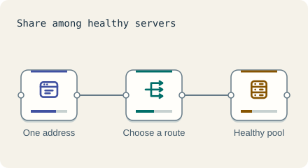

Scale the front · 3 minutes
Spreading load
A load balancer hands each request to a free server so none is overwhelmed.
Open this lesson
One address, many servers
People type one address. Behind it you can run many servers, but something must choose which one answers. That is the load balancer. It also notices a broken server and stops sending it work.
Choosing who is next
Send a mix of short and long requests. Compare round robin with a policy that can see which servers still have work.
Try the idea
This demo sends about 2,550 requests a second overnight and 3,000/s at the daytime peak, with small traffic fluctuations. Retries are off. One size M server handles ≈ 1,000/s. Add a load balancer and set App servers to 5 for headroom.
Key numbers
- Load balancer hop
- ≈ 1 ms. approx.
- Health check every
- ≈ 30 s. a dead server is dropped within a minute, approx.
- Servers for this demo
- ≈ 5 at size M. 3,000 requests/s ÷ (1,000 requests/s per server × 70% busy) ≈ 4.3, rounded up to 5.
- One balancer
- ≈ 50,000 requests a second. managed balancers scale up, approx.
Check your reasoning
Think through these questions before opening the lesson. In the game you can test the idea and compare your reasoning.
- What does a load balancer do when one server dies?
- Which setting suits requests of very different lengths?
- Can a load balancer be a single point of failure?
The key point
A load balancer lets many servers act as one, and hides the ones that fail.